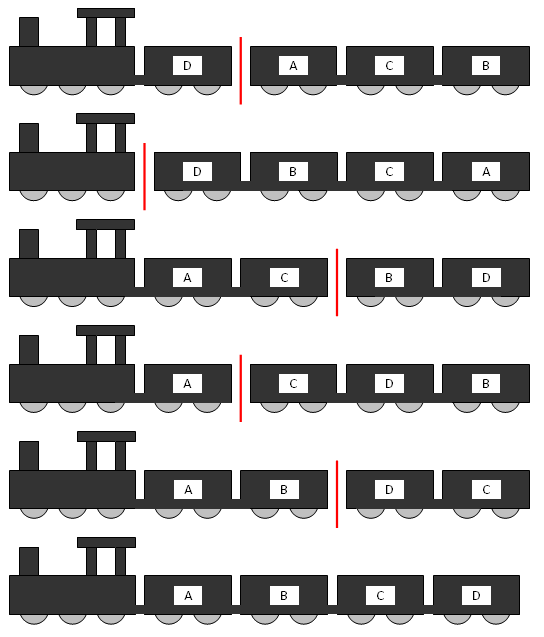

A train is used to transport four carriages in the order: ABCD. However, sometimes when the train arrives to collect the carriages they are not in the correct order.
To rearrange the carriages they are all shunted on to a large rotating turntable. After the carriages are uncoupled at a specific point the train moves off the turntable pulling the carriages still attached with it. The remaining carriages are rotated 180 degrees. All of the carriages are then rejoined and this process is repeated as often as necessary in order to obtain the least number of uses of the turntable.
Some arrangements, such as ADCB, can be solved easily: the carriages are separated between A and D, and after DCB are rotated the correct order has been achieved.
However, Simple Simon, the train driver, is not known for his efficiency, so he always solves the problem by initially getting carriage A in the correct place, then carriage B, and so on.
Using four carriages, the worst possible arrangements for Simon, which we shall call maximix arrangements, are DACB and DBAC; each requiring him five rotations (although, using the most efficient approach, they could be solved using just three rotations). The process he uses for DACB is shown below.

It can be verified that there are 24 maximix arrangements for six carriages, of which the tenth lexicographic maximix arrangement is DFAECB.
Find the 2011th lexicographic maximix arrangement for eleven carriages.